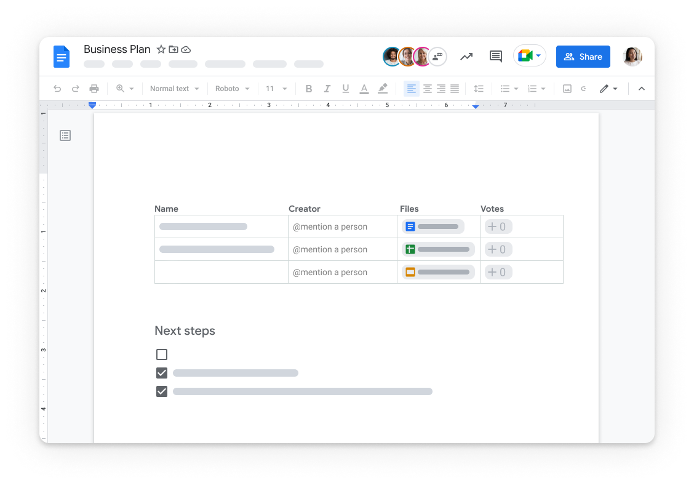

Google Docs
es una herramienta de Google que forma parte de la suite Google Docs Editors, junto con Hojas de cálculo, Presentaciones, Formularios y otras aplicaciones. Permite redactar documentos, aplicar formato, insertar imágenes, tablas y enlaces, y guardar
automáticamente todo en la nube a través de Google Drive. Esto facilita el acceso desde computadoras, tablets o smartphones sin necesidad de instalar software adicional.Funciones principales
Creación y edición de documentos:
Ofrece todas las funciones básicas de un procesador de textos tradicional, como negrita, cursiva, subrayado, listas y estilos de texto.Colaboración en tiempo real:
Varios usuarios pueden trabajar simultáneamente en un mismo documento, dejando comentarios, sugerencias y viendo los cambios al instante.Almacenamiento en la nube:
Todos los documentos se guardan automáticamente en Google Drive, evitando pérdida de información y permitiendo descargar los archivos en formatos como Word o PDF.Integración con otros servicios de Google:
Se conecta con Gmail, Google Calendar, Google Sheets y Google Slides, facilitando la gestión de proyectos y la organización de información.Funciones avanzadas de productividad:
Incluye plantillas, herramientas de IA para generar borradores, notas de reuniones, seguimiento de revisiones y control de permisos de edición.Historia y disponibilidad
Google Docs se originó a partir de Writely, un procesador de textos web lanzado en 2005, y fue adquirido por Google en 2006.Desde entonces, ha evolucionado para ofrecer colaboración en línea, compatibilidad con archivos de Microsoft Office y funciones avanzadas de productividad. Está disponible como aplicación web, móvil y de escritorio, compatible con navegadores como Chrome, Firefox, Edge y Safari.
En resumen, Google Docs es una herramienta versátil y gratuita que facilita la creación, edición y colaboración de documentos en línea, ideal para uso personal, académico y profesional.
Funciones y herramientas de los documentos de Google Docs
Google Docs ofrece un conjunto completo de herramientas para crear, editar y colaborar en documentos en línea de manera eficiente y en tiempo real. Funciones básicas de edición Google Docs permite redactar y formatear documentos con opciones clásicas de procesador de texto, como: Títulos y subtítulos para organizar el contenido jerárquicamente y facilitar la exportación a
gestores de contenido con HTML compatible.
Listas numeradas y con viñetas, incluyendo sublistas de varios niveles.
Inserción de imágenes y gráficos para complementar el texto.
Tablas con número de filas y columnas personalizable.
Formato de texto como negritas, cursivas y subrayado para destacar información.
Ventajas
- Colavoracion en tiempo real
- Acceso desde cualquier lugar
- Guardado y sincronizacion automaticamente
- Histrial de versiones
- Facilidad para compartir y controlar permisos
- Compativilidad y variedad de herramientas
- Seguridad y proteccion de datos
- Multiplataformas y fasil uso